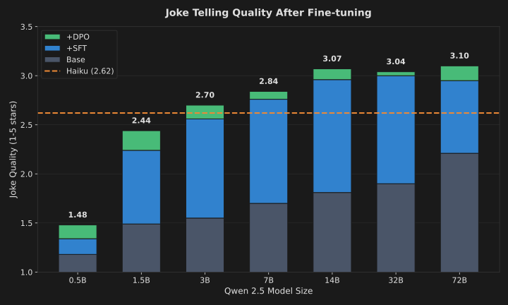
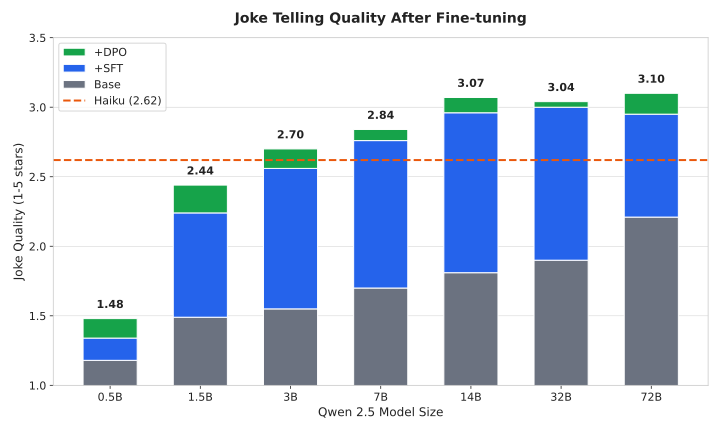

March 12, 2026
Qwen 3B Fine-Tuning Beats Claude Haiku: Scaling Curve 0.5B-72B
Today, agents typically run on large frontier models, relying on prompts and RAG rather than training. What happens when we use a much smaller model, train it for the task, and ship the agent with its own adapter?
We tested this on Qwen 2.5 models from 0.5B to 72B, training them on the constrained task of joke telling and comparing the quality of generated samples to Claude Haiku 4.5.
Result: a fine-tuned 3B matches Haiku, and 7B or 14B clearly surpasses it—running open-source models on consumer hardware. On constrained tasks, this could mean frontier-level quality at drastically simpler infrastructure—the 3B variant could even run on a smartphone.
"My doctor said I need to cut back on salt. I told him my tears should count."
"I asked my Alexa to play sad music. She played a lecture on my credit card debt. My therapist charges $200/hr."
"I started a podcast about productivity. Episode 3 was just me explaining why I missed episodes 1 and 2."


The fine-tuned 3B model produces an average quality of 2.70 stars, which is already slightly better than Haiku at 2.62 stars. The 7B and 14B models clearly pull ahead, reaching 2.84 and 3.07 respectively.
Experiment
We fine-tuned Qwen 2.5 models across seven sizes using SFT and DPO, then compared their output quality against Claude Haiku. We chose joke generation because it's a constrained creative task where quality is subjective but measurable—easy to generate bad jokes, hard to generate good ones. It also requires no tooling, making it a clean benchmark for raw generation quality.
Task. Generate 1000 jokes, each mutually different (embedding vector similarity < 0.85 cutoff). See the joke creation prompt.
Evaluation. Every sample was graded 1-5 stars using Claude Haiku. See the grading prompt. Using Haiku as the judge gives us a consistent baseline: we're measuring whether fine-tuned models can match or beat the same model that's grading them.
Base models. Qwen 2.5 Instruct (4-bit quantized): 0.5B, 1.5B, 3B, 7B, 14B, 32B, 72B. We used 4-bit quantization to fit larger models on consumer hardware while testing the full scaling curve.
SFT training. 3000 samples generated by Haiku: 2000 4-star + 1000 3-star examples. We skipped 1-star and 2-star samples to teach the model what good looks like, not what to avoid.
DPO training. 300 preference pairs from the SFT model's output, ranked by the same grading prompt. DPO learns from the model's own mistakes—comparing its better outputs against its worse ones.
Results
| Model | Avg | 4-star | 3-star | 2-star | 1-star |
|---|---|---|---|---|---|
| 72B + SFT + DPO | 3.10 | 34.2% | 41.1% | 24.2% | 0.3% |
| 32B + SFT + DPO | 3.04 | 32.9% | 39.1% | 27.2% | 0.7% |
| 14B + SFT + DPO | 3.07 | 32.6% | 41.5% | 25.3% | 0.4% |
| 7B + SFT + DPO | 2.84 | 22.2% | 41.5% | 34.6% | 1.7% |
| 3B + SFT + DPO | 2.70 | 16.9% | 39.1% | 41.6% | 2.4% |
| Haiku (ref) | 2.62 | 13.8% | 37.0% | 46.1% | 3.1% |
| 1.5B + SFT + DPO | 2.44 | 8.2% | 34.6% | 50.3% | 6.9% |
| 0.5B + SFT + DPO | 1.48 | 0.2% | 6.9% | 34.0% | 58.9% |
5-star ratings omitted (≤0.2% across all models).
Full scaling curve across Qwen 2.5 model sizes:
| Size | Base | +SFT | +DPO | vs Haiku |
|---|---|---|---|---|
| 72B | 2.21 | 2.95 | 3.10 | +18% |
| 32B | 1.90 | 3.00 | 3.04 | +16% |
| 14B | 1.81 | 2.96 | 3.07 | +17% |
| 7B | 1.70 | 2.76 | 2.84 | +8% |
| 3B | 1.55 | 2.56 | 2.70 | +3% |
| 1.5B | 1.49 | 2.24 | 2.44 | -7% |
| 0.5B | 1.18 | 1.34 | 1.48 | -44% |
Key Findings
3B is the crossover point. Fine-tuned 3B (2.70) beats Haiku (2.62). Below 3B, even full fine-tuning can't close the gap.
Sweet spot is 14B. It beats Haiku by 17%, while 32B shows no improvement—likely underfitting with our small training set. The cost/quality tradeoff favors 14B for this task.
SFT does the work, DPO polishes. SFT delivers +50-65% improvement across model sizes. DPO adds +3-10% on top.
Fine-tuned small beats base large. 3B+DPO (2.70) beats 72B base (2.21) by 22%. A 24x smaller model wins when trained for the task.
Discussion
Joke telling is well suited for evaluating fine-tuned small models: simple and isolated—no tools, no multi-step reasoning, no external dependencies—yet non-trivial, requiring creativity and taste.
Using Haiku as both trainer and judge might seem circular, but it actually puts Haiku at an advantage. We trained smaller models to tell jokes like Haiku, then let Haiku grade on its own terms. The fine-tuned models beat Haiku on Haiku's home turf.
We also found the larger models harder to train, most likely due to our small training sets (3000 SFT, 300 DPO). With larger datasets and incremental training, the ceiling may be higher still. Whether these gains hold for multi-step reasoning or tool use, ie. more complex agentic tasks, remains to be tested.
For agents in real production, this experiment suggests interesting opportunities. Since agents operate under constrained directives—repeating a specific task, generating tool calls, producing structured output, following specific formats—fine-tuning is a perfect solution to increase their performance and efficiency without having to rely on only frontier models.
A hybrid architecture could use a frontier model for planning and reasoning, while delegating constrained generation to small, task-specific models. Ship the agent with a 3B adapter, reducing its dependency on high-cost frontier models. The benefits are:
- Simpler operations. Smaller footprint means easier deployment, scaling, and resource management.
- Data privacy. Training and inference stay local—no sensitive data leaves your infrastructure.
- Cost reduction. No per-token API fees at scale. No pre-training from scratch. Runs on modest hardware.
- Fast iteration. Lightweight fine-tuning means quick improvement cycles as more data comes in.
- Lower latency. Smaller models respond faster, critical for interactive agents.
- Adapter per agent. Multiple agents share one base model, each with its own adapter loaded on demand.
This experiment is part of a larger stack we're building: infrastructure for permanently running agents with well-defined objectives that improve over time. Fine-tuning is one piece of that puzzle. More to come.
Follow along at github.com/llm-works